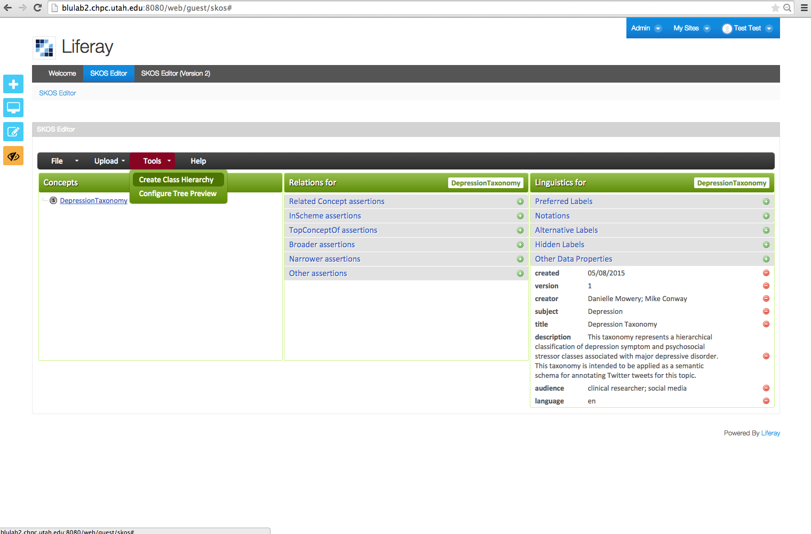

Populating the thesaurus using the "Create Class Hierarchy" Wizard
Concepts can be entered using a GUI-based “Create Class Hierarchy” Wizard to support the rapid creation of SKOS concept hierarchies. The Wizard can be accessed via “Tools” ⇒ “Create Class Hierarchy” (see below)

The desired concept hierarchy can be entered using a tab-indented text format (see “Hierarchy” text box below)
Created with the Personal Edition of HelpNDoc: Full-featured Help generator